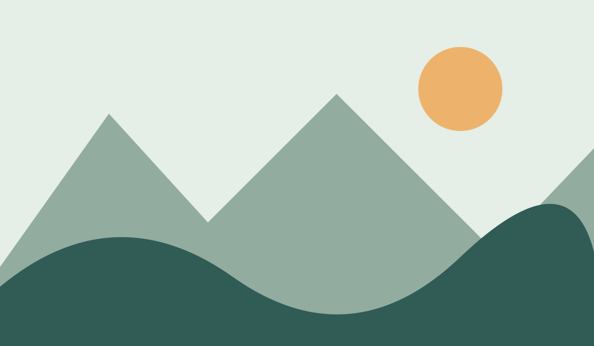

Smooth movement
Hover over this card to lift it upward, enlarge it slightly, and deepen its shadow.
ANDERSON BENITEZ ORTIZ · WEEK 6
Exploring CSS transitions, keyframe animations, and JavaScript.
Hover over this card to lift it upward, enlarge it slightly, and deepen its shadow.
Each card uses translateY(-8px) and scale(1.02) for a gentle interactive effect.
A rotating frame changes its border from teal to orange and back over a four-second timeline.

Use the buttons to explore all five illustrations.